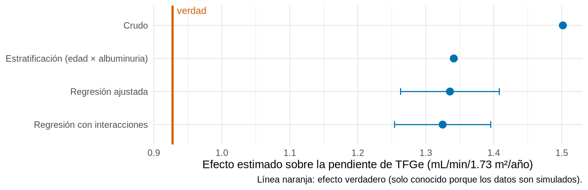

Ajustar “a la antigua”: estratificación y regresión
Comparas a quienes sí toman iSGLT2 con quienes no. Los que lo toman pierden TFGe más despacio, ¡por mucho! Pero también son más jóvenes, tienen mejor TFGe y más albuminuria. ¿Cuánto de esa diferencia es el fármaco y cuánto es simplemente quién recibe el fármaco?
Antes del puntaje de propensión (12.3), el ajuste por confusores se hacía de dos maneras. Ambas buscan la misma idea, comparar manzanas con manzanas: dentro de cada nivel de los confusores, la asignación al tratamiento debería parecerse a un sorteo (intercambiabilidad condicional).
- Estratificación: separas a los pacientes en “cajones” de perfil parecido, comparas dentro de cada cajón y combinas.
- Regresión ajustada: incluyes los confusores como covariables en un modelo y dejas que el modelo haga la comparación “a igualdad de” edad, TFGe, etc.
Lo que vamos a hacer
- Ver cuánto sesgo tiene la comparación cruda (porque conocemos la verdad).
- Ajustar por estratificación y por regresión (con y sin interacciones).
- Revisar la positividad: ¿hay pacientes comparables en todos los cajones?
Paso 1: la comparación cruda (el resultado “feo”)
crudo verdad_ATE
1.50 0.93 Qué vemos: el crudo dice que el fármaco mejora la pendiente en 1.5 mL/min/año; la verdad es 0.93. Parte de esa diferencia es confusión: los pacientes con mejor pronóstico reciben el fármaco con más frecuencia.
Paso 2: estratificación (comparar dentro de cajones)
Dividimos a los pacientes según los dos confusores que más pesan: albuminuria (A1-A3) y grupo de edad (3). Son 9 cajones. En cada uno restamos la pendiente de tratados menos no tratados:
ckd <- ckd |>
mutate(cat_a = categoria_a(uacr),
gedad = cut(edad, c(0, 59, 69, 100), labels = c("<60", "60-69", "≥70")),
estrato = interaction(cat_a, gedad, sep = " / "))
por_estrato <- ckd |>
group_by(estrato, isglt2) |>
summarise(n = n(), pendiente = mean(pendiente_tfg), .groups = "drop") |>
pivot_wider(names_from = isglt2, values_from = c(n, pendiente)) |>
mutate(dif = pendiente_1 - pendiente_0, n_total = n_0 + n_1)
por_estrato |> mutate(across(where(is.numeric), \(x) round(x, 2)))# A tibble: 9 × 7
estrato n_0 n_1 pendiente_0 pendiente_1 dif n_total
<fct> <dbl> <dbl> <dbl> <dbl> <dbl> <dbl>
1 A1 / <60 97 77 -0.79 -0.25 0.54 174
2 A2 / <60 471 737 -1.9 -0.6 1.29 1208
3 A3 / <60 62 228 -2.71 -0.74 1.97 290
4 A1 / 60-69 127 37 -1.47 -0.82 0.65 164
5 A2 / 60-69 777 579 -2.41 -1.34 1.07 1356
6 A3 / 60-69 129 252 -3.4 -1.31 2.08 381
7 A1 / ≥70 104 23 -2.1 -1.66 0.44 127
8 A2 / ≥70 697 275 -3.27 -1.92 1.35 972
9 A3 / ≥70 186 142 -4.26 -1.96 2.31 328Qué vemos: la diferencia dentro de cada cajón (dif) crece con la albuminuria: de 0.54 en A1 / <60 a 1.97 en A3 / <60. El efecto no es igual para todos. También hay cajones desiguales: en A1 / ≥70 hay 23 tratados frente a 104 no tratados.
Para tener un solo número, promediamos las diferencias con el tamaño de cada cajón:
estrato_ate <- weighted.mean(por_estrato$dif, por_estrato$n_total)
c(crudo = unname(crudo), estratificado = estrato_ate, verdad = unname(verdad["ATE"])) |> round(2) crudo estratificado verdad
1.50 1.34 0.93 La estratificación baja el sesgo de 1.5 a 1.34. No llega a la verdad porque dentro de cada cajón siguen mezclados pacientes con distinta TFGe, HbA1c, PAS y ECV, y sobre todo con distinta fragilidad (no medida).
Con 3 categorías de edad × 3 de albuminuria ya hay 9 cajones. Si añades TFGe (3), HbA1c (3) y ECV (2) tendrías 162 cajones, muchos vacíos. Además, convertir una variable continua en categorías deja confusión residual dentro de cada cajón. La estratificación no escala.
Paso 3: regresión ajustada (un modelo para todos los confusores)
Un modelo de regresión absorbe muchos confusores a la vez, a cambio de suponer una forma (lineal, sin interacciones):
# A tibble: 1 × 3
estimate conf.low conf.high
<dbl> <dbl> <dbl>
1 1.34 1.26 1.41Qué vemos: el coeficiente del tratamiento es 1.34 (IC 1.26 a 1.41): casi lo mismo que la estratificación, y todavía lejos de la verdad. Es el mismo resultado del Cap. 8.2.
Con interacciones: el efecto promedio correcto
Aquí el efecto cambia con la albuminuria (el fármaco ayuda más a quien tiene más). Cuando hay interacción, el coeficiente del tratamiento deja de ser el efecto promedio. La solución es incluir interacciones y luego promediar los efectos de cada paciente (estandarización, ver 12.6):
# A tibble: 1 × 3
estimate conf.low conf.high
<dbl> <dbl> <dbl>
1 1.32 1.25 1.4Qué vemos: el efecto promedio es 1.32. Un pequeño cambio, y el mismo problema de fondo.
tibble(metodo = c("Crudo", "Estratificación (edad × albuminuria)", "Regresión ajustada", "Regresión con interacciones"),
estimado = c(crudo, estrato_ate, reg_aj$estimate, reg_int$estimate),
ic_inf = c(NA, NA, reg_aj$conf.low, reg_int$conf.low),
ic_sup = c(NA, NA, reg_aj$conf.high, reg_int$conf.high)) |>
grafico_estimaciones(verdad["ATE"])
El ajuste clásico acerca el resultado a la verdad, pero no llega. Más adelante verás que ningún método basado en lo medido llega, y por qué.
Paso 4: positividad (¿hay pacientes comparables?)
El supuesto de positividad exige que, para cada combinación de confusores, exista una probabilidad mayor que cero de recibir cada tratamiento. Si en cierto perfil nadie recibe el fármaco, no hay datos para estimar su efecto allí, y la regresión extrapola sin avisar.
# A tibble: 3 × 4
# Groups: cat_a [3]
cat_a porcentaje_tratados `No inicia` `Inicia iSGLT2`
<ord> <dbl> <int> <int>
1 A1 29.5 328 137
2 A2 45 1945 1591
3 A3 62.3 377 622Qué vemos: en A1 solo el 29.5 % recibe el fármaco, frente al 62.3 % en A3. Hay menos información en A1, pero todos los cajones tienen tratados y no tratados: no hay una violación grave. Con el PS (12.3) examinarás el solapamiento con más detalle.
¿Cuándo basta la regresión?
La regresión ajustada es razonable cuando hay pocos confusores bien medidos, la forma funcional se conoce (se comprueba con splines, 8.5) y hay buen solapamiento. Una idea que repite la literatura: el PS no es “más causal” que la regresión; ambos ajustan por lo medido y sus conclusiones deberían concordar. Si difieren, investiga por qué (casi siempre es extrapolación o mala forma funcional). Lo que sí aportan los métodos de PS (12.3-12.5) es separar el diseño del análisis: equilibras los grupos y compruebas el balance antes de mirar el desenlace.
- Estratificar y ajustar por regresión buscan lo mismo: intercambiabilidad condicional en los confusores medidos.
- La estratificación no escala (cajones vacíos); la regresión depende de la forma del modelo y extrapola.
- Con efecto heterogéneo, usa interacciones y promedia (
avg_comparisons): el coeficiente solo no es el ATE. - Revisa la positividad: sin pacientes comparables no hay estimación sin extrapolar.
- Aquí todo el ajuste acerca el estimado a la verdad (0.93), pero no llega: algo no medido sigue actuando.
Ejercicio
- Estratifica por albuminuria y categoría G (G2, G3a, G3b, G4). ¿Cuántos cajones hay? ¿Alguno queda sin tratados o sin no tratados?
- Añade
ns(tfg_basal, 3)(paquetesplines) a la regresión. ¿Cambia el efecto estimado? - Calcula el ATT con la regresión con interacciones (
newdata = subset(ckd, isglt2 == 1)) y compáralo con el ATT verdadero (1.06).